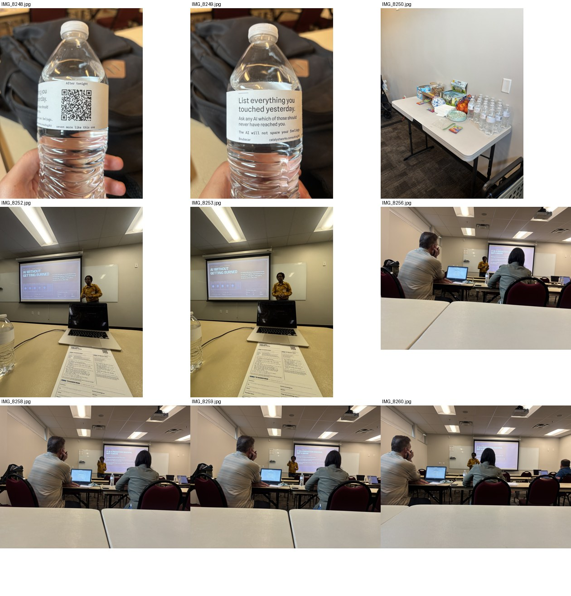
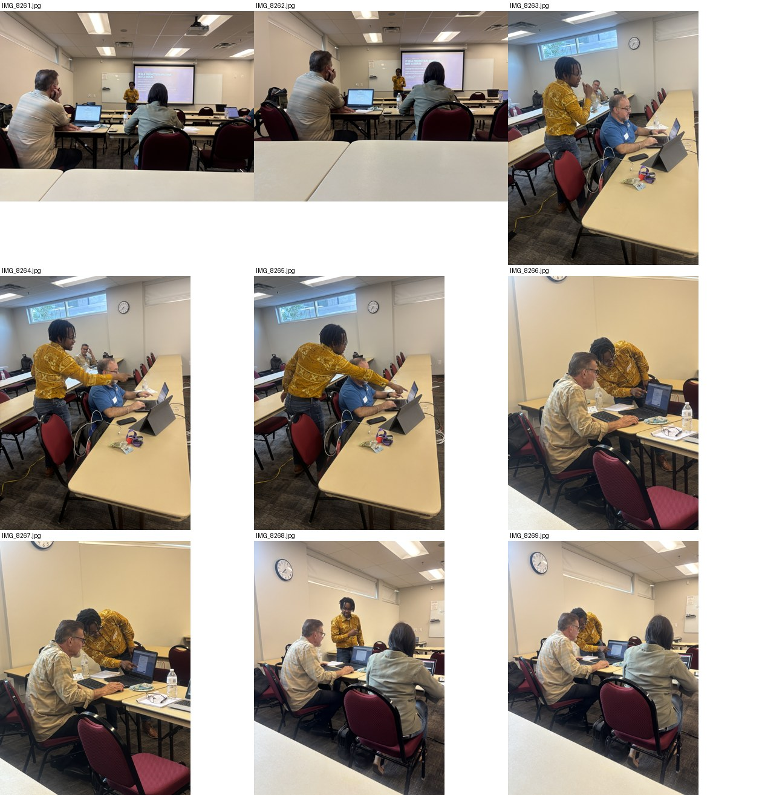
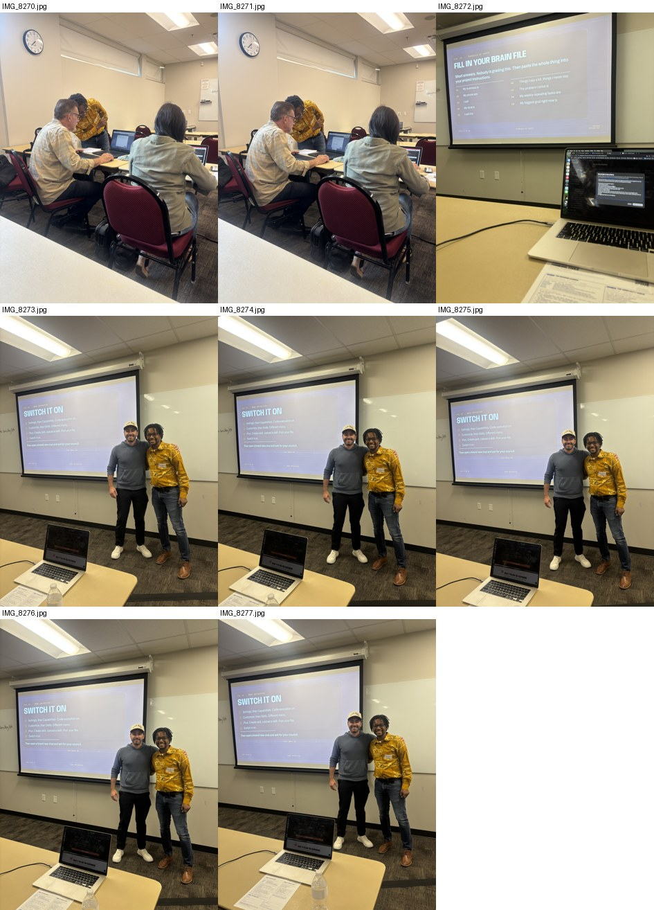
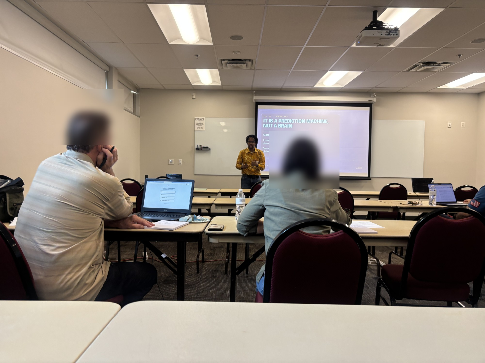

Everything from today that still needs you, on one page. Nothing is being built behind this that is not on it. Thirty six rows in nine groups. Approve, reject, or skip each one, change the words right in the box where it is copy, and leave a note on anything at all, including the ones you skip.
Start with the two that gate other work. The Bill and Kim question in the July 30 section decides what you can use from that day, and the lead-magnet option decides what goes behind the email wall before the 16th. Everything else can wait an hour; those two are holding other things up.
One thing got better since this page first went up. The July 30 recap cut was blocked on face consent nobody had collected. Somebody has now actually watched all three clips: there is not a single attendee in any of them, so the video is clear and needs no blurring. The photos are the part still held, and the contact sheets are on this page so you can settle them without opening anything.
Three things were added after the first version, and two of them are real decisions. The lead-magnet campaign, with six posts and the option that gates them. The pallet lane, where the channel is parked and only the sourcing budget is still yours to call. And the 82 posts marked approved by you with no record of the approval, which was flagged this morning, went missing, and has now been found by counting it live off the board.
What is deliberately not here. The Money Map rows appear as a pointer only, because the Money Map stays their one home. This morning's duplicate scare is resolved and left off. And nothing on this page is a copy of a decision you have already made.
Two posts, one campaign: give one seat-holder a live plan teardown after the September 24 session. Both sit on the Content Board as Draft, not approved, so neither can publish until you decide here. Both passed the voice and social gates (93/92 and 92/91); the cross-model check was not run, so the gate score is one model's opinion, not two.
One person in the room on September 24 is going to bring me the thing they are about to spend money on, and we are going to find out together whether it holds up. A name comes out of the hat. We sit down for forty five minutes in the week after. For the first twenty I give no advice at all. I only ask. What exactly are you about to buy, and who is it for. What have you already tried, and what did that cost you. What would have to be true for this to be worth doing. Then we go and look, while you watch. Who is already doing this near you, and how well. What people say about them. What the work is actually worth. Whether anyone is paying money right now to reach the same buyer you want. You walk away with a verdict on your own plan. Go, wait, or leave it, with the reason and the source sitting next to every line. Where we could not find out, it says so instead of guessing. I built this check for myself first. It strips out the parts of a plan that are only there because they look clever, and it earned its place in my own week, which is the only reason it is in front of you. One name gets it done with me. Everyone in the room leaves able to run it themselves, which is the actual point. Your seat is your entry. Thursday September 24, in Sandy. catalystworks.consulting/workshop
One person in the room on September 24 brings me the thing they are about to spend money on. Forty five minutes. For the first twenty I give no advice at all. I only ask. What are you buying, who is it for, what have you tried, what did it cost. Then we go and look while you watch. Who else does this near you. What the work is worth. Whether anyone is paying right now to reach your buyer. You leave with a verdict on your own plan and the source next to every line. I built this check for myself first. One name gets it done with me. Everyone in the room leaves able to run it themselves. Your seat is your entry. catalystworks.consulting/workshop
Both posts were scored by one model: voice 93 and 92, social 92 and 91, virality 9 out of 10. The bar is 90, so they clear it. What did not happen is the second-model pass that normally catches a score a single model is flattering itself on.
Running it costs a few minutes and delays nothing — the first post is not due until the 18th. Approving here means you are fine shipping on one opinion.
Seven pieces for the September 16 online session and the September 24 room, all sitting as Draft, not approved, in date order. The first one is due to go out on the 9th, so this group is the one with a clock on it. Four are scripts you would record on a phone; three are motion graphics or an edit of footage that already exists. One of them carries a consent problem and is marked.
[SPOKEN SCRIPT, phone-recorded, vertical 9:16, ~65-70 sec] You've been meaning to actually use AI for two years now. Everybody has. And if you are like most of the owners I talk to, you poked at ChatGPT a few times, got a useless answer back, and went back to doing it the old way. That is not on you. It gave you a useless answer because it did not know your business. Not what you sell, not who buys it, not what you charge. On Wednesday, September 16th, eleven in the morning Mountain, I am running an hour online where you build the one file that fixes that. Paste it in once, and every answer after that comes back about your business instead of a business that does not exist. Turn the wifi off partway through and it still runs. I would rather show you that than promise it. It costs you an hour of a working day, not an evening at home. Link is right here. Come build it with me. On-screen text: 'Sept 16 - 11am MT - online' / 'the file that knows your business' / 'catalystworks.consulting/online'
[MOTION-GRAPHICS TITLE CARD, no camera, no voice, 16:9, 20 sec] On-screen text sequence: brand mark -> 'WHAT I BUILT FOR MYSELF FIRST' -> 'Three tools. Ninety minutes.' -> 'September 24 - Sandy, Utah.' Venue slot reads 'Sandy, Utah' only -- room not confirmed, do not name the specific room.
[SPOKEN SCRIPT, phone-recorded, vertical 9:16, ~35-40 sec] Last call on this one. The online session I told you about is tomorrow, September 16th, eleven in the morning Mountain. Sixty minutes, and you do not need to be anywhere but your own desk. You build one file, the one that holds what you sell, who buys it, what you charge. It keeps working after we hang up. I run this on my own business first. That is the only reason I know which parts are worth your hour. Link is right here. See you tomorrow. On-screen text: 'TOMORROW - 11am MT' / '60 min - online' / 'catalystworks.consulting/online'
Eleven this morning, Mountain time. Sixty minutes. You have seen this page describe the one file that runs this whole hour: what you sell, who buys it, what you charge, and what you have already ruled out. Paste it in once and every answer after that comes back about your business instead of a business that does not exist. Reading about that file and building your own, against the tool you actually use, are not the same hour. Come build it live with me rather than take my word for it. Bring the business and a laptop, not a phone. Registration closes when we start. catalystworks.consulting/online
[SPOKEN SCRIPT, phone-recorded, vertical 9:16, ~70-80 sec] I ran this in Sandy in July, and a few people came and built real things in the room. On September 24 I am doing it again. Ninety minutes, in person, Sandy, Utah. Three tools this time, not one. A file that knows your business. A second opinion you can argue with, three different points of view that go at the thing you have been chewing on and then one of them calls it. And a check on your own plans, the kind that strips out the parts that only look clever. I pull the wifi down partway through and show you it keeps running. I would rather show you that than promise it. No technical skill needed. Bring a laptop. Link is right here. On-screen text: 'Sept 24 - 7pm - Sandy, UT' / '3 tools - 90 minutes' / 'catalystworks.consulting/workshop'
[VIDEO EDIT of existing real footage -- straight cut of clip-01.mov, clip-02.mov, session-recording-full.mov from the July 30 workshop shoot, mirrored to Drive. Vertical 9:16, ~30-45 sec.] Caption card sequence, timed to the cuts: 'July 30. Sandy, Utah.' 'Real room. Real business.' 'Same session runs again September 24.' 'catalystworks.consulting/workshop' GATE UPDATE, 2026-09-06: the board row warned this needed a face-consent pass because the photo README flags recognisable attendees and it was assumed the video showed the same faces. Somebody has now actually watched all three clips. There is not a single attendee in any frame of any of them -- only Boubacar and the screen. No blurring and no consent chase is needed for this cut. Full detail and the footage itself are in the July 30 section below.
[MOTION-GRAPHICS QUOTE CARD, no camera, no voice, vertical 9:16, 8 sec] Quote: 'I would rather show you that than promise it.' — Boubacar, on pulling the wifi mid-session. On-screen sequence: title card 'AI WITHOUT GETTING BURNED' -> the quote card -> CTA card 'September 24 - Sandy, Utah - catalystworks.consulting/workshop'
Five Monday slots proposed, none confirmed, nothing written into Beehiiv yet. The shape of the month is give, give, give, ask, reset — three issues hand something over before one asks for anything. The four new slots exist as Draft rows carrying only the angle and the hook; no body has been written for any of them, deliberately, because writing four issues you have not signed off on is the waste this page exists to prevent. Full reasoning per slot is on the newsletter plan page.
Three sends drifted to Tuesday — 08-25, 09-01 and 09-08 — while still being logged as Monday. It was a labelling error from the one-week reslot, not a decision, and it already self-corrected: every slot from 09-14 onward is on Monday.
So this confirms the anchor rather than moving anything. The reason it matters: your stated cadence is the issue on Monday, then the same piece as a LinkedIn article Wednesday or Thursday. A Tuesday send squeezes that gap to one day, and that repost cadence has never once run.
One consequence worth naming: with Monday fixed, 09-08 stays exactly where Beehiiv already has it. Moving a scheduled post to fix a label would cost more than the label is worth.
This one is already written from your own approved board copy, subject and subtitle gated at 92, and it is already on a Monday. The only open question was the date.
Why it opens October: both September sessions are done by then, so this is the first issue that can point at something you actually ran. It is the credibility piece, and credibility is what buys the right to ask three weeks later on 10-26.
The hook as it stands: “I built the thing. It worked on the first try. Then the one step that needed a human never happened, and it kept not happening for months.”
This replaces the room-Q&A angle you rejected on 09-05 — you said you did not want to write that one until after the events, and you were right, it could not have been drafted without questions nobody wrote down. That topic is deferred, not dead, and the same row was updated in place so nothing was duplicated.
The instance it would tell is real and dated: the repost habit designed for this very newsletter has never once run. The system was fine. The habit was never built.
The hook as it stands: “Most small businesses have no AI policy because every template they find is thirty pages. Here is the two-page version.”
Reuses an outline that already existed and was never written, so this is not a new idea competing for the slot.
The hook as it stands: “Most retainers are designed to grow. Mine is designed to end. Here is what that costs and what it buys.”
The row carries a standing instruction on itself: the live price ladder gets read before this is drafted, so the issue cannot go out quoting a stale number.
The hook as it stands: “The expensive thing in your business is not a bad decision. It is the decision nobody is on the hook for.”
Also reuses an existing never-written outline. It sits after the ask on purpose, so the run goes straight back to giving and never stacks two asks in a row.
This is not a draft. It is already sitting in Beehiiv with a send date, and it says something that is no longer true.
The room booking is confirmed. Alex Dotter wrote on 2026-08-25: "I do have the room available on the 24th and have moved your event over." The issue as pasted into Beehiiv still says "The room booking is not confirmed in writing yet." That one sentence needs replacing before the 21st. The replacement: The date is set, the room is booked, and I am running it.
Five plans were published today. None of them is content — each one is a direction that other work will be built on, so a plan left undecided quietly stops everything downstream of it. The full argument for each is on its own page, linked in the row. Decide the direction here.
Measured live today across every channel you own: 68,346 paid impressions, 52 LinkedIn posts, 80 X posts, 63 YouTube videos, several hundred cold emails and 16 newsletters have produced one paid workshop seat, zero newsletter clicks and zero positive cold email replies.
The conclusion is that this is a conversations problem, not a visibility problem, and that adding traffic to it does nothing. The plan is three moves in a fixed order, starting with converting the one motion already running: the comments you leave on other people's posts.
The honest number is 150 emails by 6 October, or 500 by 5 December, or 500 inside thirty days for roughly $1,400 to $2,300 of paid acquisition. That third one is your call and nobody else's.
The plan also argues for moving the scoreboard: sixteen newsletters produced zero clicks, 195 paid visitors produced zero sales, 331 cold emails produced zero positive replies. When every channel returns zero, the problem is the offer and not the reach, and a 500-person list in front of that offer is worth zero.
The 24th is confirmed. That error was ours: the record said “room being confirmed” and so did your live page, for ten days. Both are fixed and the fix is live.
The 44 posts are already written and dated; they need one approval and then they run. What no campaign can do for you is ask twenty named Utah people directly.
The cheapest miss on the board: your 46 newsletter subscribers have never been told the 16th exists. Three issues scheduled, zero mention. That is free reach you already own.
The transferable part of the method is the shape, not the tooling: one list, five touches, a fixed number every single day, and a same-day reply loop.
Held against our own record it changes the plan. We have emailed 351 people in four months and had two real human replies, both of which said STOP. Meanwhile the posts everyone thought were stuck are in fact publishing, and the workshops still have zero registrations.
The growth-implementation lane added four rows to the year-one Money Map today and checked each one against what was already there, so none of them duplicates a row you already have.
Flagging them here only so a decision made on a board you were not looking at does not go unseen. The Money Map stays the one canonical home for those rows.
This came back after the page first went up, and it settles the row above that was blocked on consent. The three video clips are clean. Somebody finally looked at them, frame by frame, across all three, and there is not a single attendee in any of them — only you and the screen. No blurring, nothing to chase. The photos are a different story: six of the twenty six are usable today, twenty have recognisable people in them, and there is one real question underneath all of it that only you can answer.
This closes the one thing that was written down as UNKNOWN. The lead-magnet spec said in as many words that nobody had viewed the clips, and that this had to be checked before Option A could even be scoped. It has now been checked.
What was actually done, not assumed. Sample frames were pulled from each clip and every one was looked at: eight across the 1.8 second clip, seven across the 3.5 second clip, and twenty five spread evenly across the whole ten minutes of the long one. Every single frame shows the same thing — the projector screen, the empty table in the foreground, and you in the yellow shirt. No attendee appears in any frame of any clip. The camera never turns toward the room.
That is why the earlier warning on the Sept 19 row was wrong. It assumed the video showed the same faces the photos do, because nobody had opened it.
What it means practically. No blurring, no consent chase, no editing constraint on the video. The recap cut can be built the moment you say go. The one thing it cannot do is show a room full of people, because that shot does not exist in the footage.
Honest limit: these were sampled frames, not a frame-complete audit. Somebody crossing the frame for under a second between two samples would not have been caught. The camera is locked on the screen throughout, so that is unlikely, but it is a sample and I would rather say so than call it certainty.
You said Bill and Kim did not approve for paid sessions, and that you can use their videos and photos for free sessions only. That sentence reads two ways, the two readings give opposite answers, and I am not going to pick one on your behalf.
Reading one — it is about where it was shot. The limit attaches to the session the footage came from. July 30 was free, so material from that day sits inside what they agreed to and can be used. Under this reading Bill and Kim are cleared for everything in this set.
Reading two — it is about what it sells. The limit attaches to what the material promotes. Their faces may appear in anything advertising a free session and never in anything advertising a paid one. Under this reading they are blocked here, because this whole September campaign drives to the paid sessions, regardless of the footage having come from a free day.
Nothing else on this page turns on a distinction this fine, and getting it wrong costs a relationship rather than a post. That is why it sits as its own row instead of buried inside the photo decision below.
Cleared and usable right now — six. Four with no person in them at all (the two branded water bottle shots, the snack table, the slide-and-laptop shot) and two of you presenting alone at a distance. None of those needs anyone's permission.
Held — the other twenty. Five different people appear across them. They are described by what they are wearing rather than by name, because guessing which pixels are Bill and which are Kim is exactly the mistake that would make this worse:
boubacar-with-attendee-01 through -05. Somebody who stands for five takes of a photo with you has in practice already said yes; you may want to treat him separately from the other four.Correction worth flagging: the earlier count said four attendees. It is five. The man in the posed shots is a distinct person from the other four and was missed.
Here is the whole set. The file name is printed above each thumbnail so you can name them precisely in the note.



If blurring ever turns out to be the answer, this is what it looks like on one of the harder frames, so the option is something you have seen rather than a word in a sentence:

Built today to pull emails in before the September 16 and September 24 sessions without breaking your no-giveaway rule from August 12. Six posts are written and sitting on the Content Board as Draft with no date — deliberately, because every weekday from September 3 to September 24 already carries a post, so these are swap-ins rather than extra days. None of them hands over a file, a template or the method. One decision gates the whole thing, and the July 30 finding above has just changed the answer to it.
Option A — email-gate a short cut of the July 30 room. One page, one review, one deploy. The recorded risk was “real attendees appear on camera, consent is his call, not an agent's”, and the spec said flatly that nobody had watched the clips so A could not even be scoped. That has changed today. The clips have now been checked and contain no attendees at all, so A can be built from video alone with no consent question attached. This is the recommendation.
Option B — email-gate the three-questions card instead. Same build cost. It carries a weakness the Council named out loud: the reader ends the exchange with less than they started with. Sensible only if you do not want your own footage out there at all.
Option C — ship only the ungated posts. Costs nothing, captures no emails for either September session.
What it hangs on. The capture side needs zero new code — the subscribe route already exists, already carries a magnet field, already allows the workshop domain, and already writes both the mail list and the internal leads table. That is code-verified, not yet live-verified, and no lead row has been read back out of the store yet.
For the record on why the shape changed: the three questions started life as the gated magnet and were demoted to open posts, because the Council read a diagnosis-only magnet as sitting in a dead zone — substantial enough to leak the reflex, thin enough to read as a tease. Two lines were cut and not softened: an invented statistic, and a manufactured vulnerability line.
Open whatever AI you already use and ask it three things about your own business. What do I sell, and to whom. What should I charge for the thing I sell most. What is slowing me down right now. Read the three answers back and count how many of them could have been written about any business on your street. That count is the problem. The tool is not broken. It has never been told one thing about you, so it hands you an answer about a business that does not exist. Every operating question in my own business goes through one of these first. Getting it to stop guessing was the first thing I had to fix. Wednesday the 16th, eleven in the morning, online. catalystworks.consulting/online
Open whatever AI you already use. Ask it three things about your own business. What do I sell, and to whom. What should I charge for the thing I sell most. What is slowing me down right now. Read the answers back. Count how many could have been written about any business on your street. That count is the problem. The tool is not broken. It has never been told one thing about you, so it hands you an answer about a business that does not exist. Every operating question in my own business goes through one of these first. Getting it to stop guessing was the first thing I had to fix. Wednesday the 16th, 11am Mountain, online. catalystworks.consulting/online
There is a fast way to tell whether your AI knows anything about your business. You do not read the answer for whether it sounds smart. You read it for whether it sounds like you. A few days ago I put up three questions to ask it. Here is how I grade what comes back. Did it name a price range I would recognize. Did it name my actual customer, and not "small business owners." Would I have been willing to forward the answer to one of them. Three noes is not your fault. You are asking a stranger to speak for a business it has never been introduced to. The interesting case is the person who gets three yeses. Something is already feeding that machine, and whoever set that up did the work. Wednesday the 16th, eleven in the morning, online. catalystworks.consulting/online
There is a fast way to tell whether your AI knows anything about your business. You do not read the answer for whether it sounds smart. You read it for whether it sounds like you. Did it name a price range I would recognize. Did it name my actual customer, and not "small business owners." Would I have been willing to forward the answer to one of them. Three noes is not your fault. You are asking a stranger to speak for a business it has never been introduced to. The interesting case is the person who gets three yeses. Something is already feeding that machine, and whoever set that up did the work. Wednesday the 16th, 11am Mountain, online. catalystworks.consulting/online
The most common thing I hear about AI is some version of: I tried it, it was useless. I believe every one of them. What I stopped believing is that the tool was the problem. You would not hand a new hire your logo and expect a quote by lunch. You would tell them what you sell, who buys it, and what you charge, and then you would let them near a customer. Nobody does that with the software. They open it cold, ask it something that matters, and judge it on the answer. I spent my corporate years watching companies get onboarding wrong with people. Now I watch them get it wrong with software. That is not a skill you have to go away and learn. It is an evening. Thursday the 24th, in Sandy. catalystworks.consulting/workshop
The most common thing I hear about AI is some version of: I tried it, it was useless. I believe every one of them. What I stopped believing is that the tool was the problem. You would not hand a new hire your logo and expect a quote by lunch. You would tell them what you sell, who buys it, and what you charge. Nobody does that with the software. I spent my corporate years watching companies get onboarding wrong with people. Now I watch them get it wrong with software. That is not a skill you go away and learn. It is an evening. Thursday the 24th, in Sandy. catalystworks.consulting/workshop
Here so you can see it rather than have to ask for it. You approved building the tool and invited the check. Both gates ran, both came back against entering the live-auction channel now, and the channel was parked rather than killed. Nothing was spent and no account was opened. One row below is a real decision; the other two are status.
The question, stated as one sentence, which nothing on record currently does: what dollar figure, if any, are you willing to put into a first liquidation pallet, given that the tail exit you were counting on is parked until December, so the real exits are the classifieds plus a booth day, and any buy has to clear a landed cost under five dollars a unit with a blind-buy cap written before the auction opens.
What changed around it today without changing it. A buy-side gate now exists that did not when the decision was written: the sub-five-dollar landed ceiling, a twenty-second legibility test (could a buyer tell it is worth money without looking anything up), and a hard blind-buy cap per lot fixed in advance and not revised during bidding. Profit per operator hour is now the lane's primary kill metric, because the old measures were per-pallet and could not compare two exit channels.
What is honestly still not closed. The four gaps from the original research are still gaps — a location inconsistency, a five-mile no-resale restriction, and an electronics exclusion. The Utah resale certificate is named as week zero work and is not done. There is no company entity. And the economics everyone is quoting come from one operator's unaudited self-report on an episode that ends in a paid-course pitch; he also says roughly thirty percent of a year's profit came from a single lot, which means the typical result sits far below the average.
Housekeeping I am flagging rather than hiding: the commit that built all this says the buy-side gate “changes the sourcing-budget decision”, but the decision entry itself was never edited. It still reads n/a for outcome, date and trigger. That is why this row exists.
Two independent checks landed in the same place. The Council said change, not adopt: one live show costs eight to twelve operator hours — building the lots, three to four hours on camera, then packing one to two hundred units — against a hard six hours a week for the entire lane. One show is nearly two weeks of the whole budget to clear a single tail, and a booth day clears comparable volume with no packing, no shipping, no account and no camera.
The niche check said kill, 1.4 out of 5, with every dimension carrying real evidence. Sellers who stream four or more times a week grow three times faster, so the channel's own minimum cadence is twelve to sixteen on-camera hours a week — two to three times the entire lane budget. The operator everyone is copying solves that by employing two streamers and a packer. It does not reproduce solo.
Three costs nobody had priced. Approval on the platform is a manual review running days to weeks and favours applicants with a selling history we do not have. A ban is permanent and can extend to related accounts. And a public on-camera auction account carrying your name is searchable by the recruiters you are applying to right now.
Parked, not killed, and one thing unparks it: somebody else doing the on-camera hours. That is the only zero on the card; move it and the whole thing becomes a hold rather than a no. The other three conditions are a tail a booth day and a donation run could not clear, a month of not breaching the six-hour cap, and the resale certificate in hand.
One gap worth knowing: the Council verdict exists only as prose in a commit message and inside the decision record. There is no standalone Council document on disk for it, unlike the niche card.
The listing tool now has a run-of-show mode: instead of writing separate ads per item, it emits one running order for a whole pallet — lot sequence, opening and floor price, one spoken hook per unit, bundle groupings, and the tail you should not bother selling. It runs in two venues, a booth day and a live show, so it pays off under the exit most likely to actually happen rather than only the parked one.
Worth one line because it is the sort of thing that usually goes unsaid: running it for real caught a defect no test would have. The model was emitting an opening bid below its own floor — open at twenty, floor at fifty five. The rule is now stated per venue and both come out coherent.
This was flagged earlier today, then went missing — the number had been said out loud in a session and never written down anywhere, so a later search of the repo, the decision records, memory and the message bus turned up nothing. It has now been found, by counting it straight out of the Content Board rather than hunting for the note. It is a live number, not a stale one.
The number is real and it reproduces. Of 961 rows on the board, 122 carry the approved-by-you flag. Of those, 82 have nothing in the field that records where the approval came from. The other 40 do — thirty one of them trace back to the August 31 review page, and the rest were backfilled on September 5 against the mail platform's own records.
Where the 82 sit right now. Seventy two are queued and have not gone out. Six are already published. Four are still drafts.
Why it matters, plainly. An approval with no source is a claim that you said yes, with nothing behind it. Most of them almost certainly are yours — they predate the point where the system started recording where a yes came from. But the six that already published are the uncomfortable ones, because if any of those was never actually yours, it went out in your name on an approval nobody can trace.
Where the number came from. Late on September 5 a sweep found 84 of these, backfilled two, and recorded the remaining 82 as irreducible — meaning there is no record anywhere to backfill them from. That was written into a task record rather than any document, which is why a later search for it came up empty. The count has since been recomputed straight off the board and comes out at 82 again, so it is current, not a leftover.
The other half of that same note, now that the original is found: it was not two clashing posts. Eight newsletter titles were wrong, six were renamed that night and two were left. Which two was never written down, so they cannot be pointed at today. Small, and not worth your time — it is here so it does not get lost a second time.